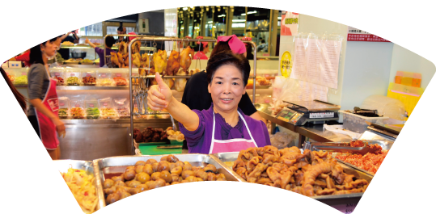

酸甜苦辣，
是料理，是人生，也是家的味道
是料理，是人生，也是家的味道

億長御坊的緣起歷程，是創辦人朱姐追尋父母親記憶與食物味道的一趟旅程；旅途中來去的風景，往來的人們，品嘗過的味道，豐富了這段旅行；而酸甜苦辣人生百態點滴入味，讓朱姐的料理不只有味道，更是人情味。而朱姐與億長御坊走著的路上，也是酸甜苦辣箇中滋味在其中……
「回家」，一道咕咾肉有了小老闆回家的故事，而在億長御坊的菜裡，您也可以從這裡找到一個屬於自己的鄉愁，或是自己熟悉的味道，就像朱姐當初尋到對母親的記憶一樣。這裡的菜色或許大江南北，但是一道一道料理、一代一代傳承，一道菜一個故事，一個口味一個記憶，相信能找到屬於每個家不同的故事，就像回到家裡。回到家，也將會是億長御坊新的開始。
學藝的酸
一開始的故事其實是令人一絲絲鼻酸的。朱姐的母親離開得早，朱姐當時年小，對於人生離別並沒有真正的感覺。然而一天一天看著父親落寞憔悴的身影，直到有一天忽然發現自己對於母親的印象也開始模糊，「這是多麼令人驚慌與遺憾的一件事啊！」，心想應該為了父親也為了自己找回對母親的記憶，朱姐獨自一個人開始走進廚房，嘗試拼湊起對母親味道與父親家鄉味的記憶。朱姐其實並沒有正式拜師學藝，但因為緣分，小時候常能在街坊鄰居婆婆媽媽的身邊打轉著，隨著陣陣「億長來幫忙啊……！」的呼喚聲，一下在這個媽媽、一下在那位婆婆的身邊忙進忙出，雖然辛苦，但卻也一點一滴慢慢地讓廚藝進步許多。而從小生長在南門市場，也讓朱姐練就了一身好工夫：怎麼看生鮮蔬果？怎麼挑選雞鴨魚肉南北乾貨？都是在這兒練成的。這樣的眼光與自我要求也傳承成為日後億長御坊的立業標準。打擊的苦
生活漸漸走回常軌，朱姐用好手藝開始了販賣熟食之路，這也可以算是億長御坊的前身。在父親經營的店裡，從「紅燒豆包」與「湖州粽」出發，屬於父親母親的家鄉記憶，在一個一個熟客介紹下慢慢地建立口碑。然而人生並不是總是順遂的，父親生病與離開、家中的變故，以及對人的信任導致失去了父親經營多年的老招牌，甚至還有朋友的背叛，連串的打擊彷彿失去了與記憶的連結，讓年輕的朱姐一度對人、對人生難以想像地失去信心。創業的辣
辣的感覺是直接的，如同朱姐直率的個性，無論做菜或待人都是以真心真誠。也因為真心交往，曾在最灰心難過，一無所有了的時候，有幾位熟客來找朱姐，包了個紅包為她加油打氣，一點心意卻是滿滿祝福，希望朱姐東山再起。就因為這個真誠，朱姐身邊有許多這樣的力量一直在身旁支持著，無論客人、朋友或是家人。重燃對料理與人生的熱情，這是億長御坊新生的開始：從第一道菜做起，十道菜、二十道菜，以至現在的數十道菜，就是因為這樣的支持力量，讓億長御坊與朱姐重新站起來，充滿感恩地成為熟食領域的「天下第一攤」。這是朱姐與大家「心」的記憶。收成的甜
家人的支持與緊密情感是朱姐很重要的力量。億長御坊裡很多道菜都有與家人的故事在其中：「東坡肉」是祖孫三代傳承的情感聯繫；第二代小老闆承襲母親DNA的好品味與好手藝，自創了「四色咕咾肉」則是傳承的連結；而母子一起嘗鮮一起研究的「雲南三絲」就是億長御坊品牌延續的力量。酸甜苦辣，朱姐的人生也已經入味其中。朱姐有個夢想，希望將億長御坊打造成熟食界的精品品牌，走過幾十個年頭，現在由第二代小老闆接棒，除了原本熟食本業不變之外，無論是透明超市的理想，或是正要開始的實體餐廳：一張屬於大「家」的餐桌，這個夢漸漸地準備實現。「回家」，一道咕咾肉有了小老闆回家的故事，而在億長御坊的菜裡，您也可以從這裡找到一個屬於自己的鄉愁，或是自己熟悉的味道，就像朱姐當初尋到對母親的記憶一樣。這裡的菜色或許大江南北，但是一道一道料理、一代一代傳承，一道菜一個故事，一個口味一個記憶，相信能找到屬於每個家不同的故事，就像回到家裡。回到家，也將會是億長御坊新的開始。
回最上